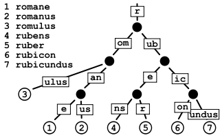

Redis数据类型
Redis一共有六种常见的数据结构，基于这六种数据结构构建了五种基本的对象类型，string，list，hash，set，zset，以及高级对象类型HyperLogLog，Geo，BloomFilter；
常见的数据类型与其对应的编码类型如下图所示：
1. String数据类型
字符串数据类型是Redis中最简单，使用最多的数据类型，底层的编码方式一共有三种，分别是int，raw，embstr，三种编码方式的内存布局如下
其中raw和embstr编码方式较像，都是使用redisObject和sdshdr结构来表示字符串对象，不同之处在于embstr编码的字符串对象创建时一次性完成RedisObject和sdshsr的内存分配，这样能够更好的利用缓存带来的优势；

应用场景：
- 缓存功能：string 最常用的就是缓存功能，会将一些更新不频繁但是查询频繁的数据缓存起来，以此来减轻 DB 的压力。
- 计数器：可以用来计数，通过 incr 操作，如统计网站的访问量、文章访问量等。
2. List数据类型
在3.2版本以前，Redis中使用ziplist和linkedlist方式进行编码，但是后续全部转换成quicklist进行编码了内存布局如下：

应用场景：
- 消息队列：Redis 的 list 是有序的列表结构，可以实现阻塞队列，使用左进右出的方式。Lpush 用来生产 从左侧插入数据，Brpop 用来消费，用来从右侧 阻塞的消费数据。
- 数据的分页展示： lrange 命令需要两个索引来获取数据，这个就可以用来实现分页，可以在代码中计算两个索引值，然后来 redis 中取数据。
- 可以用来实现粉丝列表以及最新消息排行等功能。
3. Hash数据类型
hash对象的编码可以是ziplist或者hashtable。哈希对象保存的所有键值对的键和值的字符串长度都小于 64 字节并且保存的键值对数量小于 512 个，使用ziplist 编码；否则使用hashtable；
应用场景：
- Hash 更适合存储结构化的数据，比如 Java 中的对象；其实 Java 中的对象也可以用 string 进行存储，只需要将 对象 序列化成 json 串就可以，但是如果这个对象的某个属性更新比较频繁的话，那么每次就需要重新将整个对象序列化存储，这样消耗开销比较大。可如果用 hash 来存储 对象的每个属性，那么每次只需要更新要更新的属性就可以。
- 购物车场景：可以以用户的id为key，商品的id 为存储的field，商品数量为键值对的value，这样就构成了购物车的三个要素。
4. Set数据类型
- 集合对象的编码可以是 intset 或者 hashtable 。
- 集合对象保存的所有元素都是整数值并且保存的元素数量不超过 512 个，使用intset 编码；否则使用hashtable；
应用场景：
- 标签：可以将博客网站每个人的标签用 set 集合存储，然后还按每个标签 将用户进行归并。
- 存储好友/粉丝：set 具有去重功能；还可以利用set并集功能得到共同好友之类的功能。
5. Zset数据类型（有序集合）
有序集合和哈希一样，都用于存储键值对；有序集合的键称之为成员，成员不重复，有序集合的值称为分值，均是浮点数；有序集合底层结构可以是ziplist或者skiplist，当有序集合保存的元素数量小于128个同时所有元素成员的长度都小于64字节时，使用ziplist结构进行存储；
实际使用skiplist进行存储时，同时使用了字典对有序集合的键值进行存储，这是为了能够在O(1)的时间复杂度内查找成员的分值；
应用场景：
- 排行榜：有序集合最常用的场景。如新闻网站对热点新闻排序，比如根据点击量、点赞量等。
- 带权重的消息队列：重要的消息 score 大一些，普通消息 score 小一些，可以实现优先级高的任务先执行。
6. Stream数据类型；
为了消息队列的功能更加完善，Redis借鉴kafka，增加了stream数据结构，是一个支持多播的可持久化的消息队列。stream的所有命令都以x开头，像是xadd，xdel，xlen，xrange等
在没有出现stream结构之前，使用Redis实现消息队列功能有下面两种方式：
- PUB/SUB，订阅/发布模式
但是发布订阅模式是无法持久化的，如果出现网络断开、Redis 宕机等，消息就会被丢弃； - 基于List LPUSH+BRPOP 或者 基于Sorted-Set的实现
支持了持久化，但是不支持多播，分组消费等
stream的结构设计（见stream.h和rax.h），其中主要的内容都存放在rax中，rax称为基数数（radix tree），和字典树（Trie tree）比较像，与字典树不同的是，基数数的边沿可以是一个或多个元素（即只有一个子节点的父节点，自动合并子节点和父节点）

1 | typedef struct streamID { |
stream的结构如图所示，每个stream都有很多的消费组，每个消费组都维护一个游标指向最后进行消费的位置；

stream的特点：
1、消息链表：将所有加入的消息都串起来，每个消息都有唯一的id和内容；
2、名称唯一：每个stream都是唯一名称，它是首次创建消息时创建的key；
3、持久化：redis重启后，消息内容还在；
4、多种消费模式：不仅支持单独消费，而且支持群组消费；
5、可以挂多个消费组：每个消费组会有个游标 last_delivered_id 在 Stream数组之上往前移动，表示当前消费组已经消费到哪条消息了。消费组在stream内都有唯一名称，不会自动创建，由xgroup create 进行创建；
6、每个消费组状态独立：同一份stream消息会被每个消费组消费到，且每个消费组互补影响；
7、同一个消费组 (Consumer Group) 可以挂接多个消费者 (Consumer)，消费者之间是竞争关系，任意一个消费者读取了消息都会使游标 last_delivered_id 往前移动。每个消费者有一个组内唯一名称；
8、每个消费者 (Consumer) 内部都有状态变量 pending_ids，用来记录了当前已经被客户端读取的消息，但是还没有 ack。
9、pending_ids 变量在 Redis 官方被称之为 PEL，也就是 Pending Entries List。用来确保客户端至少消费了消息一次，而不会在网络传输的中途丢失了没处理。
7. 高级数据类型HyperLogLog
HyperLogLog可以用于基数统计，就是统计列表里不重复元素的个数。这个结构可以非常省内存的去统计各种计数，比如注册 IP 数、每日访问 IP 数、页面实时UV、在线用户数，共同好友数等。HyperLogLog的命令都以pf开头，例如pfadd，pfcount，pfmerge等；
HyperLogLog的优势：一个大型的网站，每天 IP 比如有 100 万，粗算一个 IP 消耗 15 字节，那么 100 万个 IP 就是 15M。而 HyperLogLog 在 Redis 中每个键占用的内容都是 12K，理论存储近似接近 2^64 个值，不管存储的内容是什么，它一个基于基数估算的算法，只能比较准确的估算出基数，可以使用少量固定的内存去存储并识别集合中的唯一元素。
HyperLogLog的缺点是存在 0.81% 的误差；
基数统计HLL的原理：
通过计算集合中每个数字的二进制表示中的前导零的最大数目来估计均匀分布的随机数的多重集的基数。如果观察到的前导零的最大数目是n，则集合中不同元素的数量的估计是2^n，同时为了降低误差，采用了分组的方式，并使用调和平均的方式计算平均数；
可以理解成投掷硬币，因为经过哈希运算之后，每一位是0还是1的概率都是相同的，均是1/2；HLL的具体做法如下：
1、通过hash函数计算输入值对应的比特
2、比特串的低 t=(log2m) 位 对应的数字用来找到数组SS中对应的位置 i
3、t+1位开始找到第一个1出现的位置 kk，将 kk 记入数组Si位置
4、基于数组S记录的所有数据的统计值，计算整体的基数值，计算公式可以简单表示为：n=2^k
8. 高级数据结构Geo
Geo主要用于存储地理位置的信息，可以用于计算两地之间的距离，方圆几里的人；Geo相关的命令都以geo开头，例如geoadd，geopos，geodist，georadius等

Geo的底层实现就是Zset，因此可以通过zset的命令对geo进行操作；
9. 布隆过滤器（BloomFilter）
一种数据结构，是由一串很长的二进制向量组成，可以将其看成一个二进制数组。既然是二进制，那么里面存放的不是0，就是1，但是初始默认值都是0。BloomFileter常用的命令为bf.add
主要作用是：判断一个元素是否在某个集合中。比如说，我想判断20亿的号码中是否存在某个号码，如果直接插DB，那么数据量太大时间会很慢；如果将20亿数据放到 缓存 中，缓存也装不下。这个时候用 布隆过滤器 最合适了，布隆过滤器的原理是：
- 添加元素
当要向布隆过滤器中添加一个元素key时，我们通过多个hash函数，算出一个值，然后将这个值所在的方格置为1。
- 判断元素是否存在：
判断元素是否存在，是先将元素经过多个hash函数计算，计算到多个下标值，然后判断这些下标对应的元素值是否都为1，如果存在不是 1 的，那么元素肯定不在集合中；如果都是 1，那么元素大概率在集合中，并不能百分之百肯定元素存在集合中
应用场景：
解决缓存穿透的问题：一般数据库的查询命令都是现在缓存中进行查询，如果没查到，再在DB的磁盘中进行寻找，找到之后还要把磁盘的内容存储在缓存中；对于不存在的数据，这种查找将会对DB造成巨大的压力，这时候就可以使用BloomFileter，查找数据前现在BloomFileter中查一下，判断是否存在；
黑名单校验；
10. Bitmap
bitmap就是一种位图数据结构，每一位只有0和1两种状态。可以用于统计信息，比如：统计用户信息，活跃，不活跃！ 登录，未登录！ 打卡，不打卡！在Redis4.0之前，可以使用bitmap实现布隆过滤器的功能。
bitmap常用的命令有，setbit，getbit，bitcount；
11. 参考
[1] http://redisbook.com/
[2] https://pdai.tech/md/db/nosql-redis/
[3] https://segmentfault.com/a/1190000040102333
[4] https://limuzhi.com/2017/11/18/cardinality-counting/